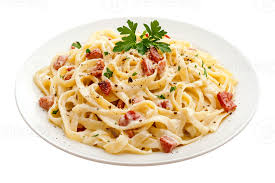

Carbonara

Description:
Carbonara is a classic Italian pasta dish celebrated for its creamy, silky sauce made without cream. Originating from Rome, it combines simple ingredients — eggs, hard cheese, cured pork, and black pepper — into a rich and comforting meal that showcases Italian culinary minimalism at its best.
Ingredients:
- oil
- guanciale
- spaghetti
- 3 eggs
- cheese
- seasonings
- salt
- black pepper
Steps:
- Cook the pork in olive oil until browned and crispy, then drain on paper towels.
- Boil the spaghetti in salted water. Drain and return to the pot. Let cool.
- Whisk the eggs, 1/2 of the cheese, and some pepper in a bowl until smooth.
- Pour the egg mixture over the pasta, stirring quickly, until creamy.
- Stir in the pork, then top with the remaining cheese and more black pepper.Stir in the pork, then top with the remaining cheese and more black pepper.
Home